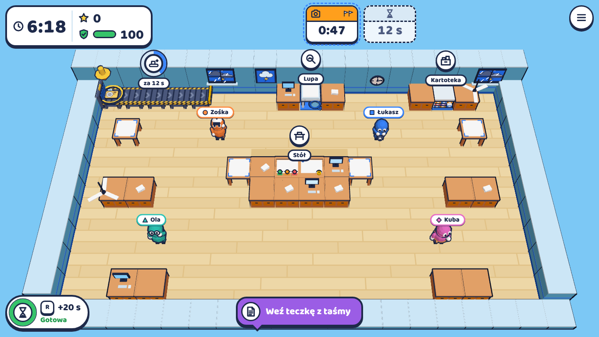
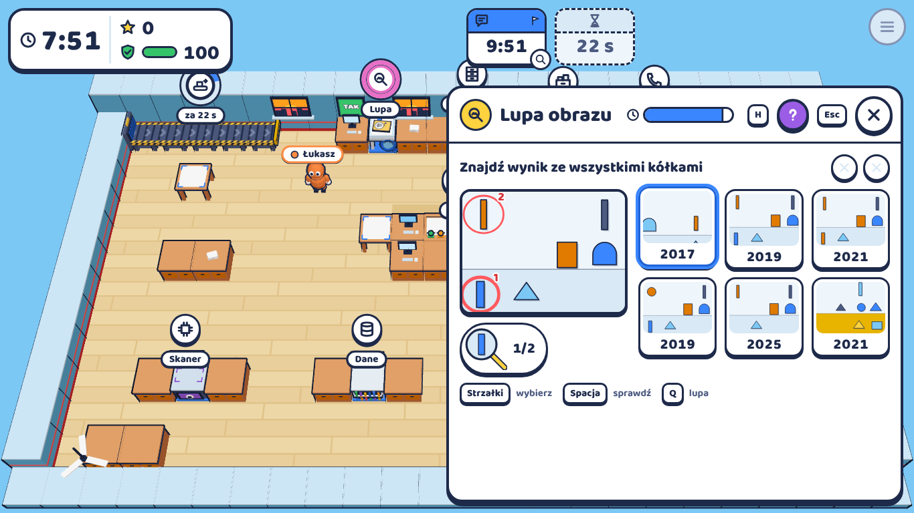
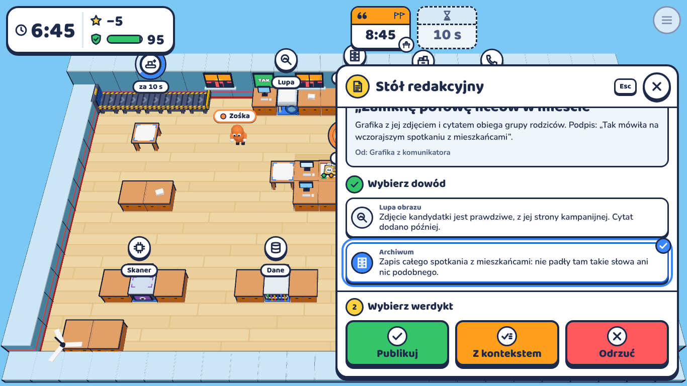
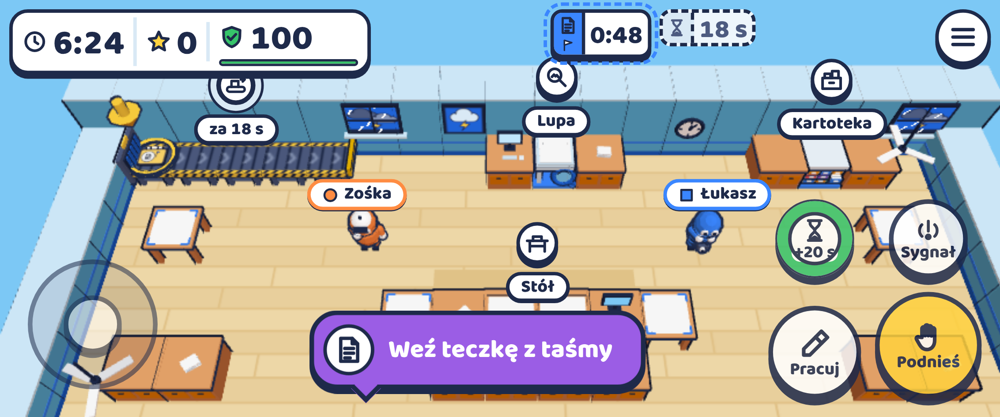
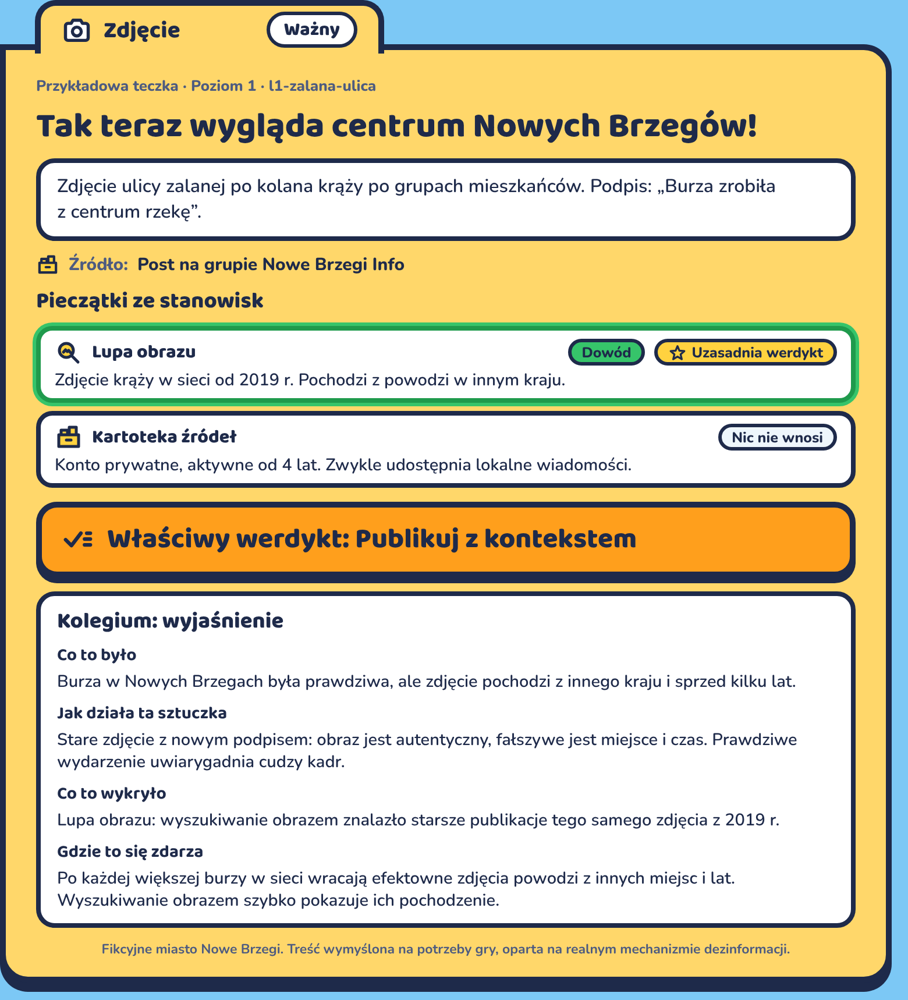
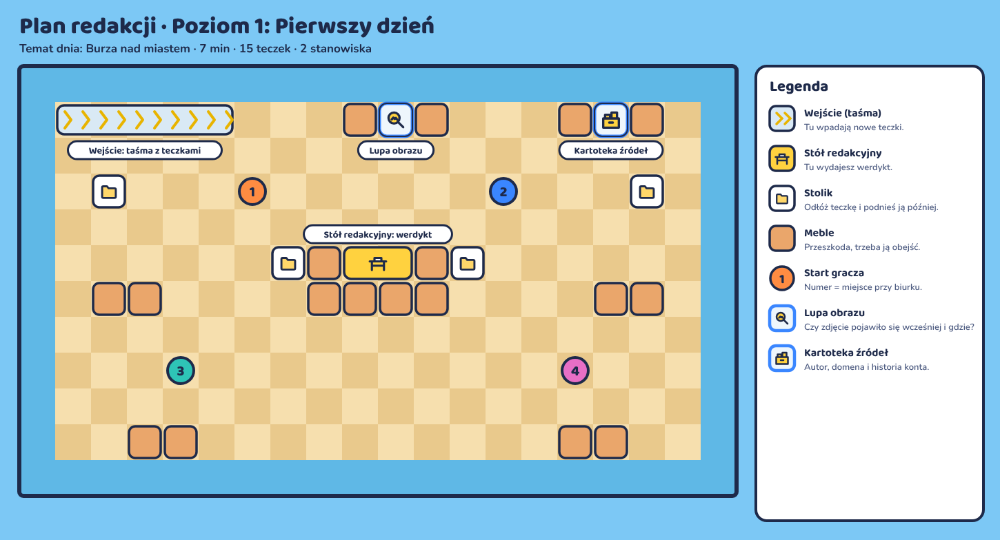
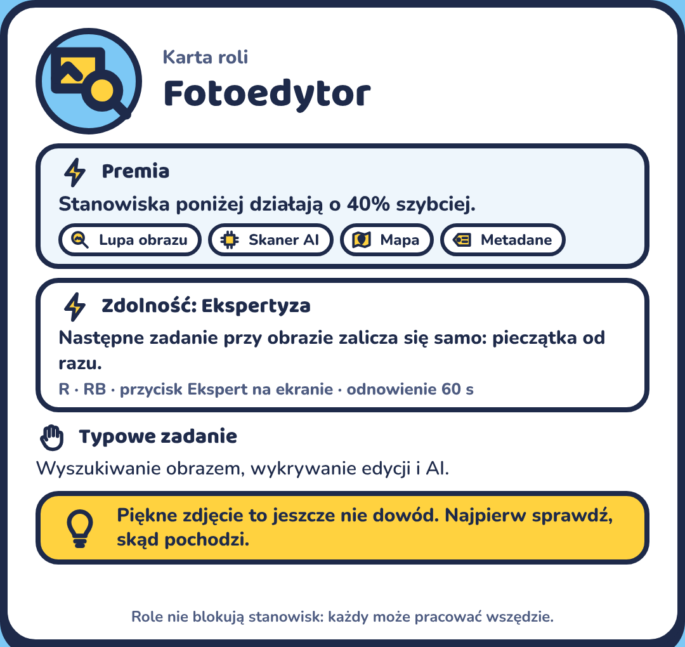
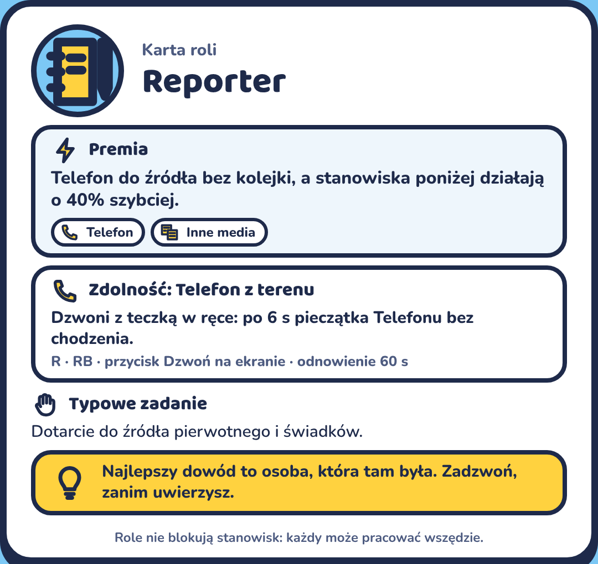
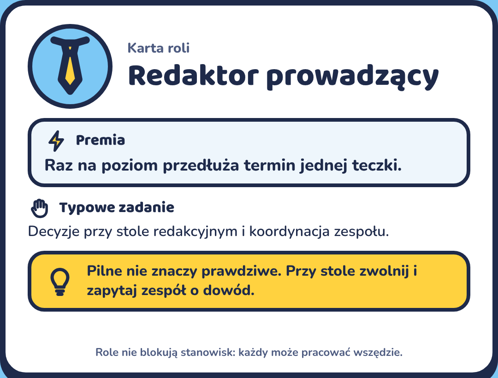
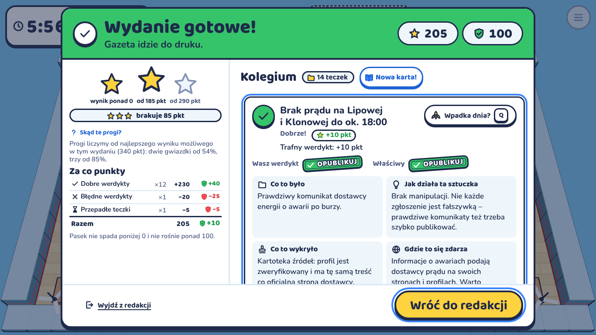

Gra o bezpieczeństwie informacji w sieci
Kooperacyjna gra przeglądarkowa: zespół prowadzi redakcję fikcyjnego miasta Nowe Brzegi, sprawdza zgłoszenia z sieci i zanim minie czas decyduje, co trafi do gazety.

Zdjęcie, cytat, post, nagranie albo statystyka z licznikiem czasu.
Gracz niesie teczkę do stanowiska i rozwiązuje krótką minigrę (3–8 s).
Wynik sprawdzenia trafia na teczkę jako dowód.
Przy stole zespół wskazuje dowód i wybiera jeden z trzech werdyktów:


Nawyku „zatrzymaj się i sprawdź”, zanim uwierzysz lub udostępnisz. Gracze rozpoznają stare zdjęcie jako nowe, zmyślony cytat, fałszywe konto, zmanipulowaną statystykę i deepfake, a do materiału dobierają właściwe narzędzie (metoda SIFT, czytanie lateralne). Presja czasu w grze to ta sama presja, której używa dezinformacja.







| Trafny werdykt | +10 / +20 |
| Trafny „z kontekstem” | +30 |
| Opublikowana fałszywka | −20, Wiarygodność −25 |
| Spóźnienie | −5, Wiarygodność −5 |
Wygrana: co najmniej 1 gwiazdka, a Wiarygodność redakcji nie spadła do zera. Lepiej się spóźnić niż skłamać.
Wszystkie grafiki to zrzuty i karty z działającej gry. Miasto Nowe Brzegi, osoby i zgłoszenia są fikcyjne.